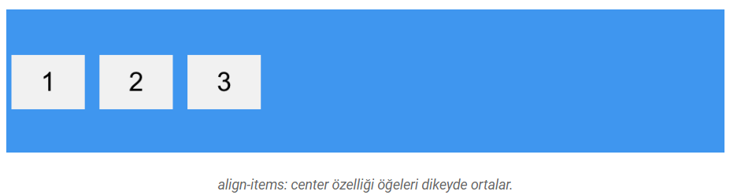

CSS Flex Yapıları
Flex neden kullanılır?
- Flex, birden fazla Sütunu(column) ve içerik satırını(row) ana kapsayıcı boyunca otomatik olarak
boyutlandırmak için kullanılan bir dizi kuraldır.
- Flex yapısı tasarımını yapacağımız siteyi responsive yani web sitesine uyumlu tasarım yapmayı
kolaylaştırır.
- İçine koyacağımız ögelerin dikey ortalamasını yapmak için kolaylık sağlar.
- Genişlik ve yükseklik ayarlarını yapabiliriz.
- Flex yapısını kullanmaya başlamak için diplay özelliğine flex değerini atamalıyız.
Flex özellikleri
- justify-content Özelliği
justify-content Özelliği içindeki elemanların X ekseninde yani yatayda hizalamaya yarar.
- flex-start:Öğeleri flexbox container’ın sol tarafına hizalar.
- flex-end:Öğeleri flexbox container’ın sağ tarafına hizalar.
- center:Öğeleri flexbox container’ın ortasına hizalar.
- space-between: Öğeler eşit aralıklarla yatay şekilde yayılır
- space-around:Öğeler etraflarında eşit aralıklar olacak şekilde yatay şekilde yayılır
- align-items Özelliği
align-items Özelliği içindeki elemanların Y ekseninde yani dikeyde hizalamaya yarar
- flex-start:Öğeleri flexbox container’ın tepesine hizalar
- flex-end:Öğeleri flexbox container’ın aşağısına hizalar
- center:Öğeleri flexbox container’ın dikey ortasına hizalar
- baseline: Öğeleri flexbox container’ın yazı referans çizgisine(baseline) hizalar
- stretch:Öğeler flexbox container boyunca uzarlar

- flex-direction Özelliği
flex-direction özelliği öğelerin hangi yönde yerleştireleceğini belirler.
- row: Öğeler yazı yönü ile aynı yönde yerleştirilir.
- row-reverse: Öğeler yazı yönünün tersi yönünde yerleştirilir.
- column:Öğeler yukarıdan aşağıya doğru yerleştirilir.
- column-reverse: Öğeler aşağıdan yukarıya doğru yerleştirilir.
- flex-wrap Özelliği
flex-wrap özelliği birden fazla satırda gösterilecek öğelerin nasıl bir davranış sergileyeceğini belirlemek için kullanılır.
- nowrap:Tüm öğeler tek satıra sığar.
- wrap:Öğeler satırlara bölünür.
- wrap-reverse:Öğeler satırlara ters sırada bölünür.
- align-content Özelliği
align-content kuralı ile satırları birbirinden ayırabilirsiniz.
- flex-start:Satırlar flex container’ın tepesinde toplanır.
- flex-end:Satırlar flex container’ın aşağısında toplanır.
- center:Satırlar flex container’ın dikey ortasında toplanır.
- space-between:Satırlar aralarında eşit boşluk kalacak şekilde yayılırlar.
- space-around:Satırlar etraflarında eşit boşluk kalacak şekilde yayılırlar.
- stretch:Satırlar flex container’ı kaplamak için uzarlar.